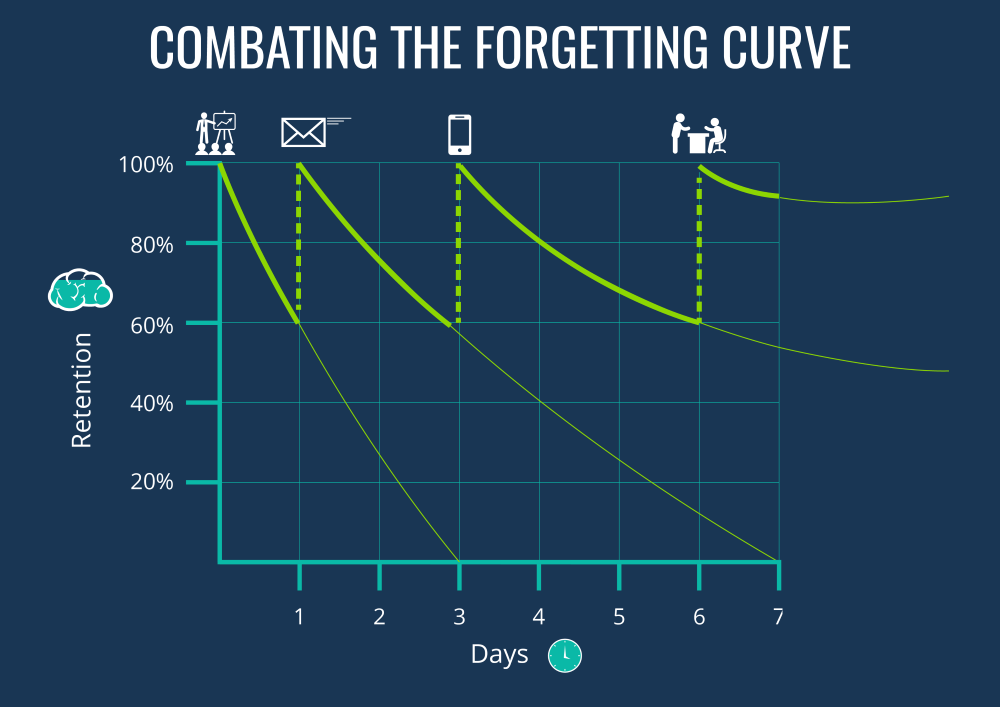

But how do you revise?

Learning can be challenging. Whether you are trying to learn the names of all 46 US Presidents, or want to learn how to invert a binary tree. Sometimes it can be frustrating having to reach for a textbook every time you want to remember something. At Flash! Cards, we've done the boring part for you. We often get asked "But how do you revise". The answer is surprisingly simple.
Using our website, we highly encourange users to keep to a regular routine such as the Ebbinghaus memory retention routine - shown above. If you wish to learn more, click the image above to take you to the wikipedia page. Remember, Von Neumann didn't design the modern CPU architecture in a day and Dijkstra didnt find the shortest path in a day either!